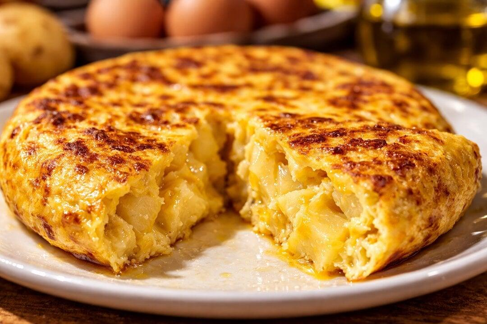
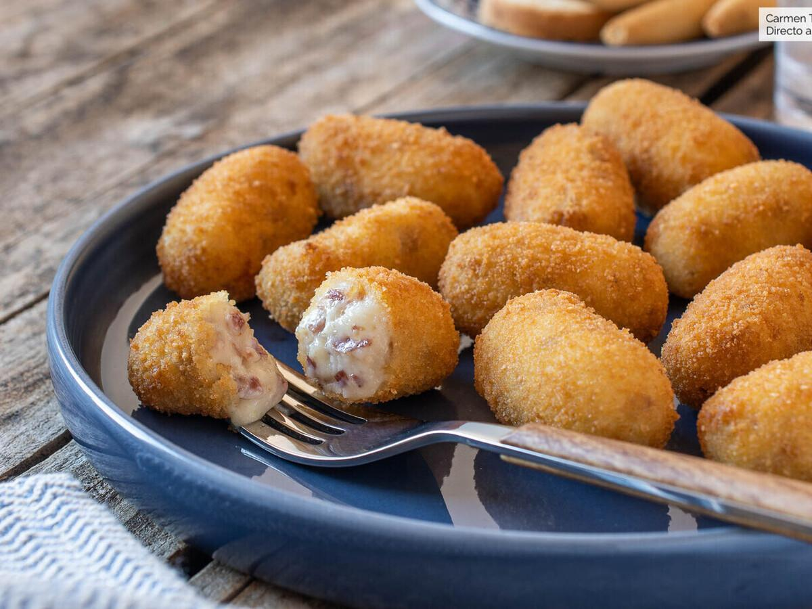
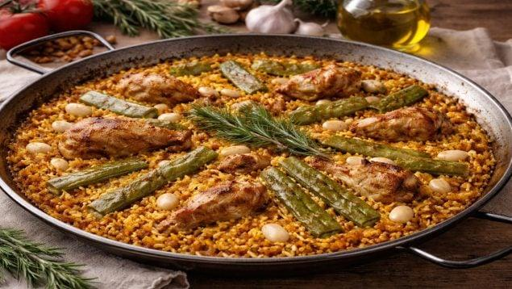

Recetas de toda la vida con ingredientes frescos y de temporada, servidas en un ambiente acogedor y familiar.
Elaboramos cada día recetas tradicionales de la gastronomía española con productos frescos y de temporada.
Menú de la Casa
Primer plato + segundo plato + postre casero
22 €Los sabores tradicionales favoritos de nuestros clientes

Tortilla tradicional elaborada con huevos de corral, patatas, cebolla y aceite de oliva virgen extra.

Croquetas caseras de jamón ibérico con bechamel cremosa y un rebozado dorado y crujiente.

Paella tradicional con arroz, pollo, conejo, judías verdes, garrofón y azafrán.
Abierto de martes a domingo · 13:00 a 23:30